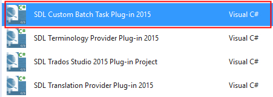
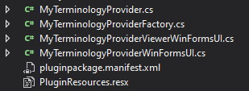
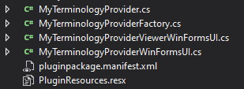
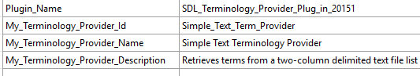
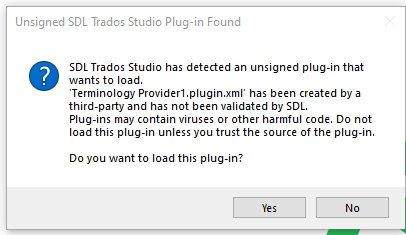
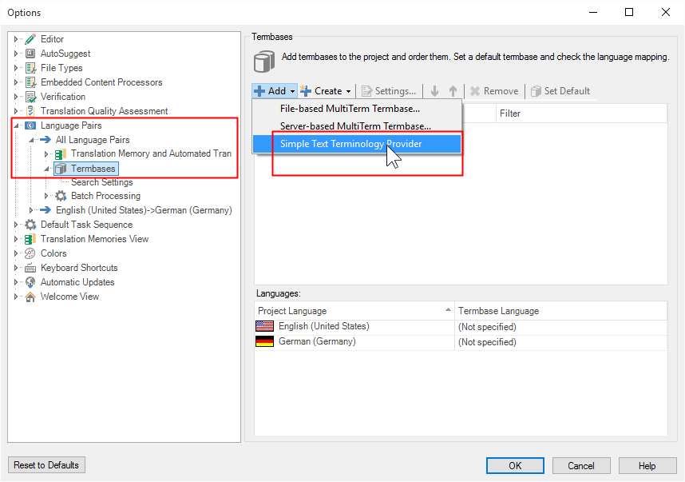

Setting up the Visual Studio project
To start setting up your batch task plug-in project, you need to generate a plug-in that can compile and that implements an empty batch task which can be seen and selected in Trados Studio. For the moment, it will not contain any application logic, that is it will not actually perform a real task.
How to create the Visual Studio Project
Assuming that you already installed the Trados Studio SDK, open Microsoft Visual Studio 2019. You will see the following options when you create a new project:  With the above templates you can set up the skeleton of a Trados Studio plug-in project. Select ** Terminology Provider (2021)**.
The Plug-in Skeleton
The plug-in template will add the required references to your project:
 It will also add the following skeleton classes to your project:

It will also add the following skeleton classes to your project:

The Plug-in Declaration: ID, Name, Description
Open the MyTerminologyProviderFactory.cs class. This class contains the plug-in declaration - the plug-in name and description that will be visible in Trados Studio:
//Create the terminology provider and pass the provider uri, which is the glossary text file name and path
public ITerminologyProvider CreateTerminologyProvider(Uri terminologyProviderUri, ITerminologyProviderCredentialStore credentials)
{
MyTerminologyProvider _terminologyProvider = new MyTerminologyProvider(terminologyProviderUri.ToString());
return _terminologyProvider;
}
Give the terminology provider plug-in a new name, ID and description. Instead of doing it directly inside this class, enter the strings into the PluginResources.resx file:

Make sure the resource file access modifier is set to public and that you treat it as an embedded resource.
Open the MyTerminologyProviderWinFormsUI.cs class. This class controls how the plug-in manifests in the Trados Studio UI. Change the TypeName and TypeDescription members as shown below.
How to build and load the plugin in Trados Studio
Build the assembly. The project is automatically configured to build the plug-in file into the %AppData%\Roaming\SDL\SDL Trados Studio\16\Plugins\Packages\ folder. After you have built the plug-in, you should find the Terminology Provider1.sdlplugin file in the folder. Start Trados Studio. As the plug-in is not yet officially signed by RWS, you will see the following message when starting the application:  For the moment, ignore this message and click Yes to make sure that Trados Studio extracts the plug-in file. Once Trados Studio is started, you should find the sub-folder Terminology Provider1 under %AppData%\Roaming\SDL\SDL Trados Studio\16\Plugins\Unpacked\ . This sub-folder contains the unpacked plug-in assemblies.
Note
To officially sign the plugin, send the sdlplugin file to app-signing@sdl.com.
Open Trados Studio and go to File -> Options -> Language Pairs -> All Language Pairs -> Termbases as illustrated below. When you click Add, the name of your newly-created terminology provider should be listed:

You have now managed to make your terminology provider available in Trados Studio. The plug-in does not perform any function yet. In the following pages we will provide functionality to the plug-in.